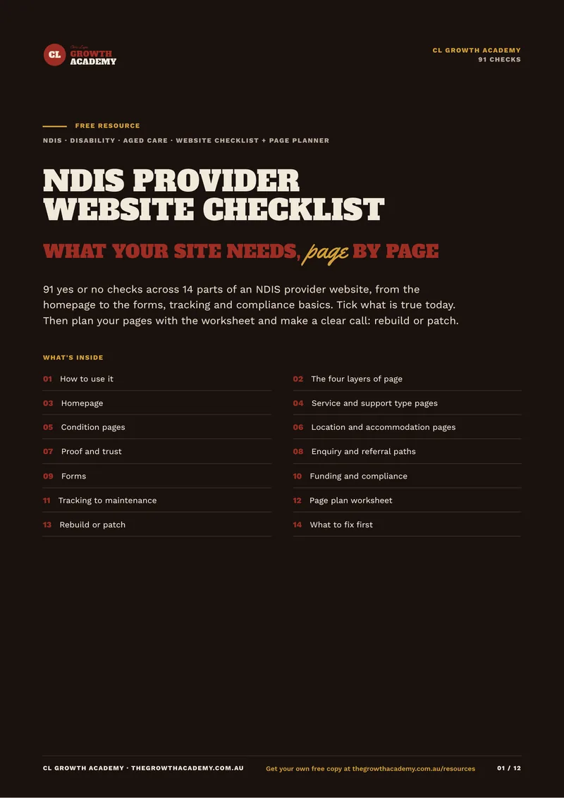

NDIS Provider Website Checklist: 91 Checks and a Page Plan Template
The NDIS Provider Website Checklist is 91 yes or no checks across 14 parts of a provider website, from the homepage to forms, tracking and compliance. Tick what is true today on a phone. Then count your pages with the page plan template and make a clear call: rebuild or patch.

What does the NDIS provider website checklist cover?
Short answer: 91 yes or no checks across 14 parts: homepage, service pages, condition pages, location and accommodation pages, proof and trust, enquiry and referral paths, forms, funding and compliance, tracking, landing pages for ads, accessibility, technical basics, search and AI visibility, and maintenance. Each part is labelled legally tied or best practice.
Legally tied means the check connects to a law, a regulator's guidelines or the NDIS Code of Conduct, and the source is named. It is a pointer, not legal advice. Best practice means it is my working standard from building and fixing provider websites.
For what an NDIS provider website should include and why each page matters, see NDIS website design.
01 Homepage
The page a family lands on late at night, on a phone. 6 checks.
Legally tied or best practice: Best practice. My working standard, built around the 11th-hour Sunday test.
- The first screen on a phone says who you support, where, and how to start.
- The headline says what the person wants, in their words.
- Two buttons sit in that first screen: one for families and participants, one for referrers.
- A tap-to-call phone number shows without scrolling on a phone.
- Photos are of your real staff, homes and services. No stock photos.
- Your Google reviews sit near the top of the page.
02 Service and support type pages
One page for each thing you deliver. 6 checks.
Legally tied or best practice: Best practice. My working standard, built around the logo test.
- Each service or support type has its own page (for example SIL, community access, in-home support, therapy).
- Each page shows how you deliver the service day to day.
- Every claim passes the logo test: put another provider's logo on the page and it would no longer be true.
- The service and the suburb or region are in the page title and the main heading.
- Each page has numbered sections and an FAQ that answers the longer questions people search.
- Each page says who turns up: how your team is matched, trained and kept consistent.
03 Condition pages
For the conditions you specialise in. 6 checks.
Legally tied or best practice: Partly legally tied. Claiming only what is true ties to Australian Consumer Law, which the NDIA says every provider must comply with (NDIA, provider responsibilities). The rest is best practice.
- There is a page for each condition you specialise in, such as spinal cord injury or acquired brain injury.
- The page says plainly that you specialise in this condition.
- It names the risks you manage, the training your staff get and who oversees care, and only claims what is true.
- It does not explain the condition to the people living with it. Explainers go in blog posts.
- Its reviews and stories come from people with that condition or their families, with consent.
- It answers the questions referrers ask: can you handle high needs, is the team consistent, will you keep them informed.
04 Location and accommodation pages
Suburbs, homes and vacancies. 7 checks.
Legally tied or best practice: Best practice. The eligibility wording keeps claims accurate under Australian Consumer Law (NDIA, provider responsibilities).
- There is a page for each suburb or region where you have homes, vacancies or local ads, grouping the homes in that area.
- Every home has its own page and its own web address, so your team can send a direct link and ads land on that home.
- Each home page says who the home suits and what daily life there looks like.
- Each home page shows real photos of that home, furnished and lived in.
- Each home page has a walkthrough video of the house and the street that introduces the main support worker.
- A vacancies page lists what is available now and is updated the day a room fills.
- Eligibility is written in compliant terms, such as "Designed for participants with SDA funding in their NDIS plan".
05 Proof and trust
Proof a stranger can check. 7 checks.
Legally tied or best practice: Partly legally tied. Reviews from staff can mislead under Australian Consumer Law (ACCC, online reviews). Consent for photos and stories ties to respecting privacy under the NDIS Code of Conduct (NDIS Commission). The rest is best practice.
- The owner and team appear by name and face on the Home, About and Contact pages.
- A Google review widget shows your best reviews on every service page.
- Reviews come from the people you support, their families and referrers. Never from staff.
- Each service page has at least 3 to 5 real photos of participants and their support workers, with written consent.
- Your main pages have a short intro video from a staff member, where you can get one.
- You ask for a review straight after a good moment, such as a smooth move-in.
- There are no stock photos and no AI-generated people or homes anywhere on the site.
06 Enquiry and referral paths
Two audiences, two ways in. 7 checks.
Legally tied or best practice: Best practice. My working standard for two audiences.
- Pages that both audiences read carry two calls to action, one for families and one for referrers.
- The family button says "Enquire" or "Talk to us", not "Make a referral".
- A "Refer a participant" button goes to a referral page with the form at the top.
- There is a page for referrers that explains how to refer and what happens next.
- Long pages repeat the call to action further down on a phone, including after the FAQ.
- A promise under each button says when the person will hear back.
- Phone, email and the referral link are in the footer of every page.
07 Forms
Short for families, complete for referrers. 8 checks.
Legally tied or best practice: Partly legally tied. What a form collects, and telling people why, ties to the Australian Privacy Principles, APP 3 and APP 5 (OAIC). Keeping questions needs-based is best practice.
- The family enquiry form is short and asks needs-based questions only.
- No form asks about plan budgets, funding amounts or diagnoses.
- Forms ask "Who is completing this enquiry?" so a referrer is routed differently from a family.
- Answers are tick boxes or drop-downs where possible, so every enquiry can be sorted.
- The referral form asks what a referrer needs to tell you: funding type, support needs, hours and who is referring.
- Only the fields you need now are required. You ask for the rest at the next step.
- Every form sends straight to your CRM or inbox through the form tool's own connection, with as few links in the chain as possible.
- Every form leads to its own thank-you page.
08 Funding and compliance
Rules that keep you out of trouble. 8 checks.
Legally tied or best practice: Legally tied. The logo checks follow the NDIS logo guidelines (NDIA). The claims checks follow Australian Consumer Law (NDIA, provider responsibilities). The consent checks follow the NDIS Code of Conduct (NDIS Commission). The privacy policy check follows APP 1 (OAIC).
- A plain funding line is on the site, such as "As a registered NDIS provider, we support self, plan and agency managed clients."
- If you are not registered, the site says you support self-managed and plan-managed participants only.
- The site never says "NDIS approved", "100% NDIS funded" or "Free under the NDIS".
- The NDIS logo appears only with written consent from the NDIA.
- If you are registered and use a provider logo, it is the "I/we heart NDIS" or "I/we support NDIS" logo with the "Registered Provider" tagline.
- Written consent is on file for every participant photo and story, for that specific use, before it is published.
- When someone withdraws consent, their photo or story comes down straight away.
- A privacy policy says what your forms collect and what you do with it.
09 Tracking
So you can count every enquiry. 6 checks.
Legally tied or best practice: Best practice.
- Calls and clicks on the tap-to-call number are tracked.
- Form submissions are counted through thank-you page visits.
- Every enquiry records where it came from, including the referrer.
- Google Analytics and Google Search Console are set up and someone checks them.
- Your ad reports count landing page views as well as clicks.
- People who reach a thank-you page are left out of your retargeting ads.
10 Landing pages for ads
Every ad gets the page that matches it. 8 checks.
Legally tied or best practice: Best practice. My working standard for paid landing pages.
- Each search or ad lands on the page that matches it, for example a spinal cord injury search on the spinal cord injury page.
- Search ads and social ads each get their own landing page.
- Paid landing pages have no menu, so the visitor has one thing to do.
- The headline matches the search or the ad.
- Within 10 seconds a visitor knows: is it available, is it local, is there capacity, and what happens next.
- The form has a "When do you need this?" field and a call-back promise under the button.
- Paid landing pages run 300 to 500 words.
- Landing pages are built inside your own website, so you own them.
11 Accessibility
Pages that work for the people who use your support. 6 checks.
Legally tied or best practice: Legally tied. The Disability Discrimination Act 1992 covers areas of public life with a digital component, and the Australian Human Rights Commission's guidelines point to the latest WCAG version (AHRC). WCAG 2.2 is the current W3C Recommendation (W3C). Easy Read is best practice.
- The site is built to the WCAG 2.2 AA standard.
- Every image has alt text that describes it.
- Every video has captions.
- Text is readable: big enough, with strong contrast against the background.
- Every page works with a keyboard and a screen reader.
- Your main pages have an Easy Read version where the people you support need one.
12 Technical basics
Nothing you send traffic to should be broken. 6 checks.
Legally tied or best practice: Best practice.
- The site is secure (HTTPS).
- Pages load quickly on a phone. Test them with Google PageSpeed Insights.
- Every page has its own page title and its own meta description.
- Pages use a clear heading order (H1, H2, H3).
- Your team can add a page or update a vacancy without paying a developer.
- Every link, button, phone number and form has been tested on a phone.
13 Search and AI visibility
Be the answer people find. 6 checks.
Legally tied or best practice: Best practice.
- Each page answers its main question in the first two sentences.
- Service, condition and suburb pages link to each other.
- Your Google Business Profile is complete and links to the right page on your site.
- Your directory listings are current and link to your website.
- You check whether ChatGPT and Google's AI answers mention you for your services and suburbs.
- Local area pages exist for the areas you want enquiries from.
14 Maintenance
A website is never finished. 4 checks.
Legally tied or best practice: Best practice.
- One named person owns website updates.
- Staff photos, vacancies and team pages change when your team or homes change.
- Forms, phone links and thank-you pages are tested every month.
- You check once a year what you pay for maintenance against the cost of a rebuild.
How do I use the checklist? Start with the 11th-hour Sunday test
The 11th-hour Sunday test: a family searches on a phone late on a Sunday night. What do they find, and can they tell within seconds that you support people like them, in their area? Open your site on a phone, run that test, then work through the checklist in one sitting.
- Tick only what is true today. A page you are halfway through building stays empty.
- Write the score at the bottom of each part. The parts with the most empty boxes come first.
- Fill in the page plan. The gap column is your build list.
- Make the rebuild or patch call before you spend more on ads.
The logo test is the one I come back to. As I told one provider, "If I was to remove your logo and put another logo on this website, it could be another provider." Every check in the list moves your site further from that.
What should an NDIS referral form ask?
Short answer: Ask what a referrer needs to tell you and nothing more: who is referring, their contact details, the funding type, the support needs, any condition that shapes the support, the hours needed, when support is needed and how they heard about you. Never ask for plan budgets or funding amounts.
The referral form fields, in order:
- Who is completing this form (role and organisation)
- Referrer name, phone and email
- Funding type
- Support needs
- Condition, where it shapes the support
- Hours required
- When do you need this?
- How did you hear about us?
Make only the fields you need now required, and ask for the rest at the next step. The family enquiry form stays shorter, with needs-based questions only. Both forms start with "Who is completing this enquiry?" so each one goes to the right person.
How many pages will my plan need?
Count one page for each service, condition, suburb and home, then add the standard pages. The worksheet in the PDF does the counting with you. These are my rough counts by provider type, built from that rule:
| Website type | Rough page count |
|---|---|
| New or single-service provider | 10 to 15 |
| Multi-service provider | 25 to 40 or more |
| SIL and SDA accommodation provider | 15 to 25, plus one per home |
| Allied health practice | 15 to 30 |
| Funded through iCare, TAC or DVA | Add 1 per scheme |
Should I rebuild or patch my website?
Patch when the pages exist, load quickly on a phone, and the gaps are copy, proof and tracking. Rebuild when you can't add a page without paying a developer, the site breaks on a phone, or the layout can't take the pages on your plan. Either way, fix broken forms and tracking first. The PDF has the full decision table and the order I work in.
Who is the checklist for?
Owners, executives and marketing staff at NDIS, disability and aged care providers, and the web developer or designer who looks after your site. Give it to them before your next website meeting.
Get the NDIS Provider Website Checklist free
You get the checklist with tick boxes and score lines, the page plan worksheet, the rebuild or patch table and the fix order as one PDF, plus every other resource in the library.
FAQ
Is there an official NDIS website checklist?
No. Neither the NDIA nor the NDIS Quality and Safeguards Commission publishes an official website checklist for providers. I checked both sites on 15 November 2026: their checklists cover the provider portal, claims and behaviour support. The rules that touch your website are the NDIS logo guidelines, the NDIS Code of Conduct, Australian Consumer Law and privacy law, and this checklist labels the checks they apply to.
How long does the website checklist take?
Each check is a quick yes or no, so one sitting with your site open on a phone is enough.
Is the checklist only for NDIS providers?
I wrote it for NDIS and disability providers. The funding and compliance part is NDIS-specific, and the rest applies to aged care providers too.
Do I need a separate page for every home?
Yes, if you offer accommodation. A page and web address per home gives your team one link to send and gives each ad a page that matches it.
Can you go through it with me?
Yes. Book a free growth audit and I'll look at your site the way a family and a referrer see it on a phone, then pick the first three fixes.
Sources
- NDIA, NDIS logo guidelines, https://www.ndis.gov.au/contact/feedback-and-enquiries/ndis-logo-guidelines (opens in a new tab), checked 15 November 2026.
- NDIA, What are the responsibilities of a provider (Australian Consumer Law, accurate and true statements), https://www.ndis.gov.au/providers/working-provider/provider-responsibilities/what-are-responsibilities-provider (opens in a new tab), checked 15 November 2026.
- NDIS Quality and Safeguards Commission, NDIS Code of Conduct, https://www.ndiscommission.gov.au/rules-and-standards/ndis-code-conduct (opens in a new tab), checked 15 November 2026.
- OAIC, Australian Privacy Principles quick reference (APP 1, APP 3, APP 5), https://www.oaic.gov.au/privacy/australian-privacy-principles/australian-privacy-principles-quick-reference (opens in a new tab), checked 15 November 2026.
- ACCC, Online reviews for products and services, https://www.accc.gov.au/business/advertising-and-promotions/online-reviews-for-product-and-services (opens in a new tab), checked 15 November 2026.
- Australian Human Rights Commission, Guidelines on equal access to digital goods and services, https://humanrights.gov.au/resource-hub/by-resource-type/guidelines-and-standards/guides-and-standards-disability-rights/guidelines-equal-access-digital-goods-and-services (opens in a new tab), checked 15 November 2026.
- W3C, Web Content Accessibility Guidelines (WCAG) 2.2, W3C Recommendation, 12 December 2024, https://www.w3.org/TR/WCAG22/ (opens in a new tab), checked 15 November 2026.
- No official website checklist: searches of ndis.gov.au and ndiscommission.gov.au, 15 November 2026.
Want a second pair of eyes on your site?
Book a free growth audit and I'll go through your website with you, then pick the first three fixes for your business.